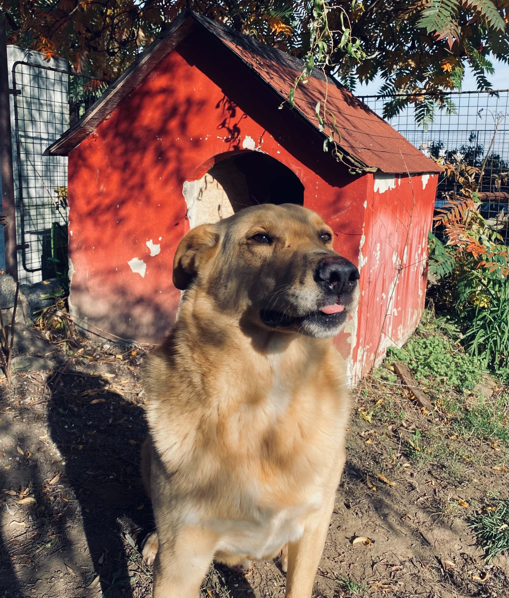
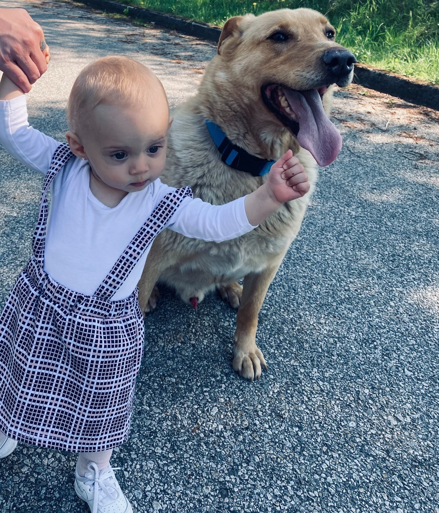
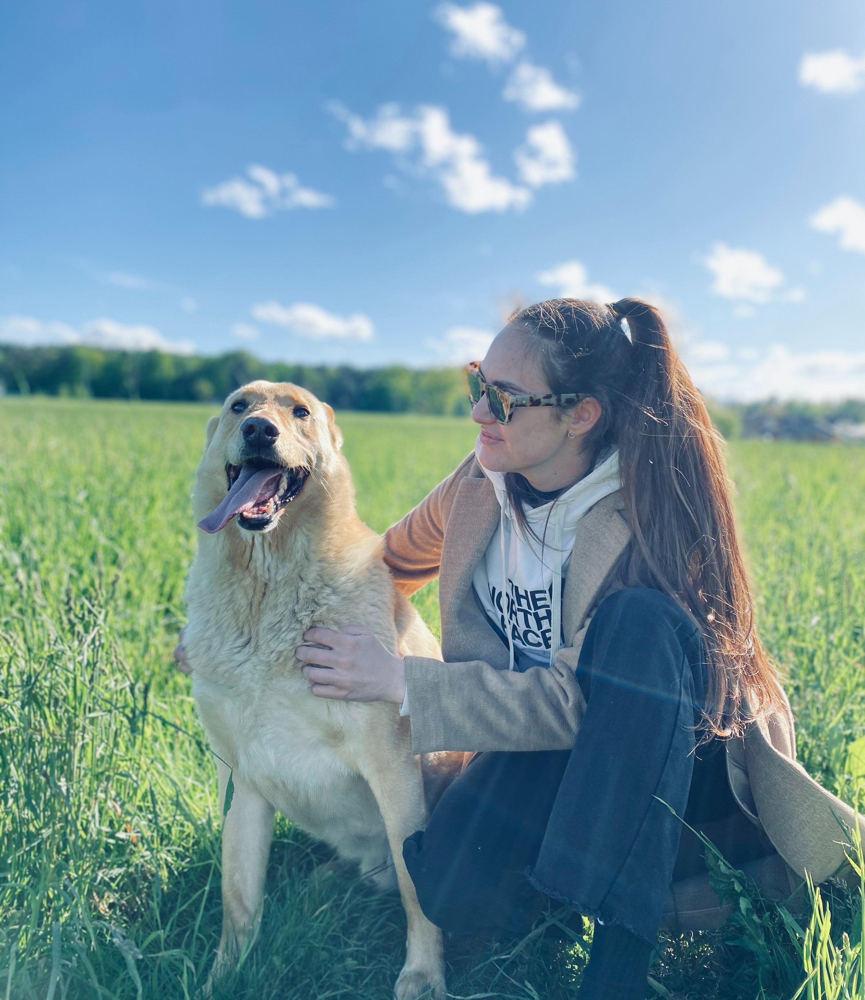

Můj příběh začal na Slovensku v romských osadách, kde mě maminka porodila. Rok jsem žil jako divoký pejsek, dokud nepřijeli hodní lidé a spolu s dalšími pejsky nás neodvezli k nim "domů". Tam nás vykoupali, naočkovali, dokonce i vykastrovali a začali nám hledat nové páníčky. Já měl štěstí a brzy jsem tu svou našel.
Jméno: Michaela Brejžková
Věk: 24 let
Bydliště: Včelná - České Budějovice
Zaměstnání: Obchodní zástupce
Koníčky: čtení, cestování a samozřejmě já
Kromě své paničky mám ještě další přátele. Jednou z nich je paničky neteř Lilli. Když mě zrovna na procházce netahá za vodítko, tak je s ní i legrace. Kvůli mé štítné žláze mě nikdo nesmí krmit, ale Lilli pořád nějaké ňamky padají z pacek, a tak za ní chodim a ten nepořádek samosebou sním.
Tohle je Pan Plyšák. Bydlí semnou na zahradě. Většinu času prospí, ale když ho panička vezme do ruky, ožije a lítá vzduchem. Jakmile ho dohoním, donesu ho zpátky paničce a takhle se to opakuje dokud to jednoho z nás (a já to nejsem) nepřestane bavit.
Tohle je má druhá panička. Je to přítelkyně první paničky. Zlobíme se navzájem a náramně nás to baví. Moc mě ale nehladí. Když to udělá, vše jí začne svědit a červenat. O to víc mi ale dává pamlsky, a tak si nestěžuji.
Můj domeček je hned vedle domu mé rodiny. Zahradu máme společnou, i když většinu času na ní velím já. Panička říká že domeček příští měsíc budeme rekonstruovat. Prý nová střecha, nové zateplení i přístavba abych se nemačkal, protože jsem pár kilo přibral. Když někdy půjdete okolo mého domečku, klidně zaklepejte. Pokud sebou nebudete mít kočku, pozvu vás na pamlsek, ukážu vám svou rodinu i oblíbená místa.
  